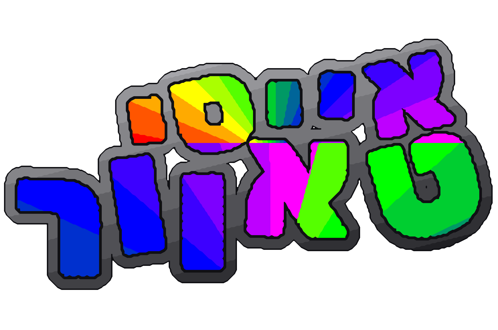

קפיצה
אייסי טאוור
איך רוצים לשחק?
מגע מלא
מסך מלא כמו משחק בטלפון. מחזיקים צד שמאל או ימין כדי לרוץ, ומחליקים למעלה כדי לקפוץ
כפתורים
המשחק למעלה, וכפתורי חצים וקפיצה מתחתיו
באייפון: כדי לשחק במסך מלא אמיתי, לחצו "שיתוף" ואז "הוספה למסך הבית"
אפשר להחליף בכל רגע במסך האפשרויות
אייסי טאוור
מהדורת סופר מריו
טוען את המגדל...